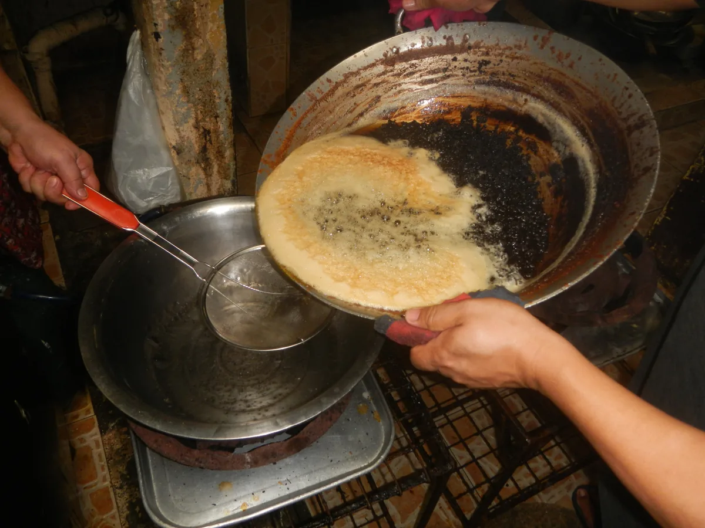

Tahap 01
Ilustrasi pengumpulan minyak bekas rumah tangga.
Setor & Catat
Warga menyetorkan jelantah dari dapur rumah tangga ke Bank Sampah Suka Mandiri. Petugas mencatat volumenya ke dalam kode batch (B-YYYYMMDD) tanpa menampilkan identitas pribadi di halaman publik — ikut mengurangi jelantah yang terbuang percuma.
Sebagian diolah jadi lilin
Sebagian dijual & dicatat